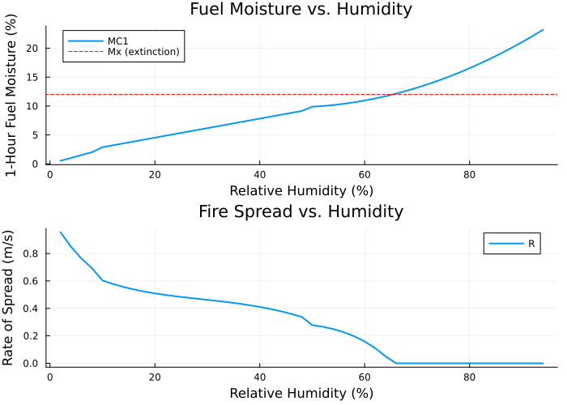

Coupling Components
Components for connecting fire spread models to data sources via the EarthSciMLBase.jl coupling framework.
Fuel Model Lookup
WildlandFire.FuelModelLookup — Function
FuelModelLookup(; name = :FuelModelLookup)A component that maps an integer fuel model code to continuous Rothermel fuel parameters using the Anderson 13 fuel model data.
Takes fuel_model as input (dimensionless integer code from LANDFIRE) and outputs the five core Rothermel parameters: σ, w0, δ, Mx, h.
Non-burnable LANDFIRE codes (91=urban, 92=snow/ice, 93=agriculture, 98=water, 99=barren) and unrecognized codes return zero heat content (h=0), which guarantees the Rothermel model computes zero reaction intensity (IR=0) and therefore zero rate of spread (R=0).
Terrain Slope
WildlandFire.TerrainSlope — Function
TerrainSlope(; name = :TerrainSlope)A component that computes terrain slope magnitude and aspect from elevation gradients.
Outputs:
tanϕ: slope steepness (rise/run, dimensionless)slope_aspect: angle of steepest descent from east (rad)
Midflame Wind
WildlandFire.MidflameWind — Function
MidflameWind(; name = :MidflameWind)A component that converts horizontal wind components (u, v) to Rothermel's midflame-height wind speed U and wind direction ω relative to the upslope direction.
Uses a wind reduction factor to convert 10m wind to midflame height (~6.1m for forest fuels). The default reduction factor of 0.4 is typical for timber fuel types (Baughman & Albini, 1980).
Equilibrium Moisture Content
See EquilibriumMoistureContent in the NFDRS section.
One-Hour Fuel Moisture
See OneHourFuelMoisture in the NFDRS section.
Fuel Moisture Coupling Chain
The NFDRS fuel moisture components can be coupled to the Rothermel fire spread model to provide dynamic, weather-driven moisture damping of fire spread. The coupling chain is:
ERA5 (T, RH) ──> EquilibriumMoistureContent ──> OneHourFuelMoisture (MC1) ──> RothermelFireSpread (Mf)When fuel moisture Mf reaches or exceeds the moisture of extinction Mx, the moisture damping coefficient η_M → 0, reaction intensity IR → 0, and rate of spread R → 0.
The following example demonstrates this behavior by sweeping relative humidity and showing how fire spread rate responds:
using WildlandFire
using ModelingToolkit
using ModelingToolkit: t, mtkcompile
using EarthSciMLBase
using OrdinaryDiffEqDefault
using Plots
emc = EquilibriumMoistureContent()
fm1 = OneHourFuelMoisture()
r = RothermelFireSpread()
cs = couple(emc, fm1, r)
sys = convert(System, cs; compile = false)
compiled = mtkcompile(sys)
# Fuel Model 1 (short grass) base parameters
base_params = Dict(
compiled.OneHourFuelMoisture₊use_fuel_sticks => 0.0,
compiled.OneHourFuelMoisture₊is_raining => 0.0,
compiled.OneHourFuelMoisture₊MC10 => 0.0,
compiled.RothermelFireSpread₊σ => 11483.5,
compiled.RothermelFireSpread₊w0 => 0.166,
compiled.RothermelFireSpread₊δ => 0.3048,
compiled.RothermelFireSpread₊Mx => 0.12,
compiled.RothermelFireSpread₊h => 18608000.0,
compiled.RothermelFireSpread₊U => 2.235,
compiled.RothermelFireSpread₊tanϕ => 0.0,
compiled.EquilibriumMoistureContent₊TEMP => 294.26, # 70°F
)
RH_vals = 0.02:0.02:0.95
R_vals = Float64[]
MC1_vals = Float64[]
for rh in RH_vals
params = merge(base_params, Dict(
compiled.EquilibriumMoistureContent₊RH => rh,
))
prob = ODEProblem(compiled, params, (0.0, 1.0))
sol = solve(prob)
push!(R_vals, sol[compiled.RothermelFireSpread₊R][end])
push!(MC1_vals, sol[compiled.OneHourFuelMoisture₊MC1][end])
end
p1 = plot(RH_vals .* 100, MC1_vals .* 100;
xlabel = "Relative Humidity (%)", ylabel = "1-Hour Fuel Moisture (%)",
label = "MC1", linewidth = 2)
hline!([12.0]; label = "Mx (extinction)", linestyle = :dash, color = :red)
p2 = plot(RH_vals .* 100, R_vals;
xlabel = "Relative Humidity (%)", ylabel = "Rate of Spread (m/s)",
label = "R", linewidth = 2)
plot(p1, p2; layout = (2, 1), size = (700, 500),
title = ["Fuel Moisture vs. Humidity" "Fire Spread vs. Humidity"])
Coupling Reference
All available couple2 methods for connecting components:
Within WildlandFire.jl
| Source | Target | Connection |
|---|---|---|
FuelModelLookup.(σ, w0, δ, Mx, h) | RothermelFireSpread.(σ, w0, δ, Mx, h) | Fuel properties |
TerrainSlope.tanϕ | RothermelFireSpread.tanϕ | Slope steepness |
MidflameWind.U | RothermelFireSpread.U | Wind speed |
TerrainSlope.slope_aspect | MidflameWind.slope_aspect | Slope aspect |
EquilibriumMoistureContent.EMC | OneHourFuelMoisture.EMCPRM | Equilibrium moisture |
OneHourFuelMoisture.MC1 | RothermelFireSpread.Mf | Fuel moisture |
RothermelFireSpread.R | LevelSetFireSpread.S | Spread rate |
EarthSciData Extension
| Source | Target | Connection |
|---|---|---|
ERA5.(t, r) | EquilibriumMoistureContent.(TEMP, RH) | Temperature and humidity |
ERA5.(u, v) | MidflameWind.(u_wind, v_wind) | Wind components |
LANDFIRE.fuel_model | FuelModelLookup.fuel_model | Fuel model code |
USGS3DEP.(dzdx, dzdy) | TerrainSlope.(dzdx, dzdy) | Terrain gradients |